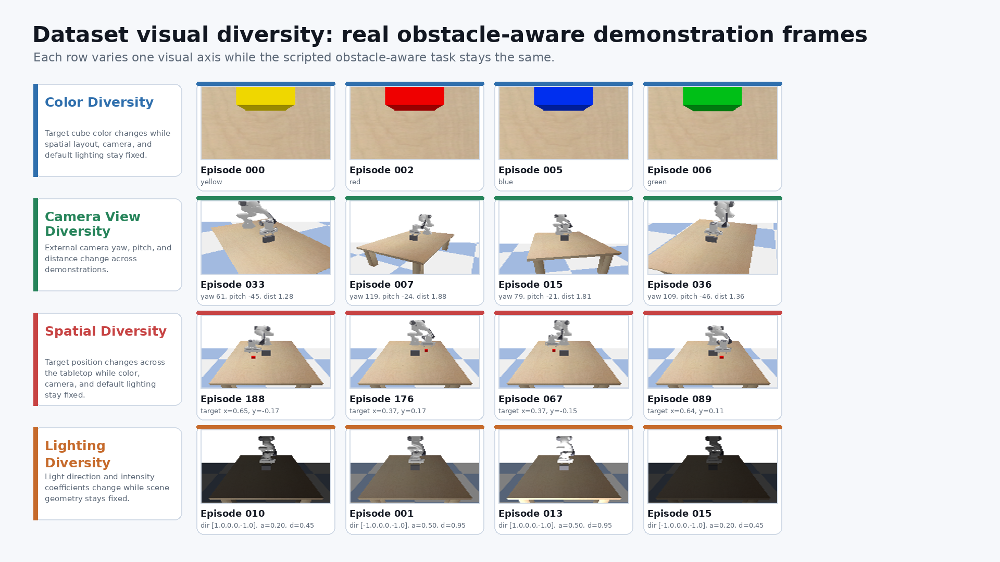
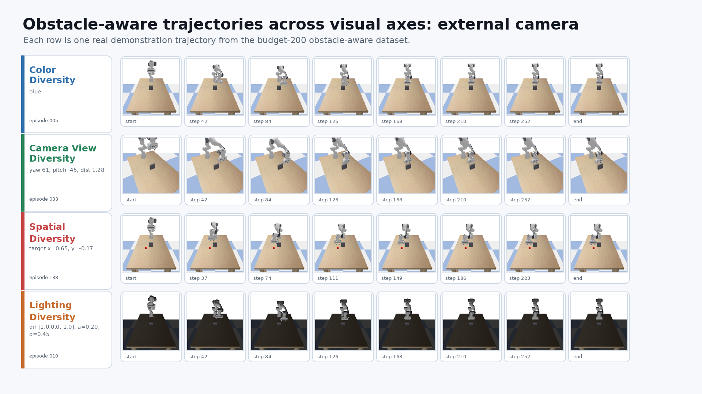
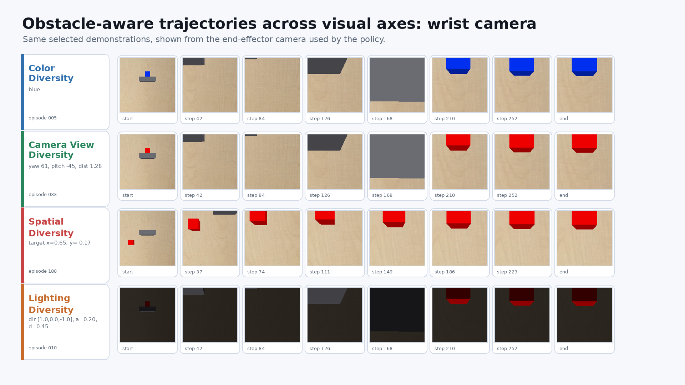

Generated from real budget-200 obstacle-aware 128px datasets on role-lab.



{
"source_dataset_dir": "/home/jaisharma/HW8/research2/results/datasets_128px_v1_phase_precise_avoid",
"budget": 200,
"seed": 0,
"task": "avoid_reach",
"axes": {
"color": {
"label": "Color Diversity",
"train_config": "avoid_color_multi",
"overview_view": "eef_rgb",
"selected_overview_episodes": [
0,
2,
5,
6
],
"trajectory_episode": 5,
"trajectory_descriptor": "blue",
"selected_descriptors": [
"yellow",
"red",
"blue",
"green"
],
"sample_count": 59000,
"episode_count": 200
},
"camera": {
"label": "Camera View Diversity",
"train_config": "avoid_camera_multi_pose",
"overview_view": "external_rgb",
"selected_overview_episodes": [
33,
7,
15,
36
],
"trajectory_episode": 33,
"trajectory_descriptor": "yaw 61, pitch -45, dist 1.28",
"selected_descriptors": [
"yaw 61, pitch -45, dist 1.28",
"yaw 119, pitch -24, dist 1.88",
"yaw 79, pitch -21, dist 1.81",
"yaw 109, pitch -46, dist 1.36"
],
"sample_count": 59000,
"episode_count": 200
},
"spatial": {
"label": "Spatial Diversity",
"train_config": "avoid_spatial_wide",
"overview_view": "external_rgb",
"selected_overview_episodes": [
188,
176,
67,
89
],
"trajectory_episode": 188,
"trajectory_descriptor": "target x=0.65, y=-0.17",
"selected_descriptors": [
"target x=0.65, y=-0.17",
"target x=0.37, y=0.17",
"target x=0.37, y=-0.15",
"target x=0.64, y=0.11"
],
"sample_count": 64531,
"episode_count": 200
},
"lighting": {
"label": "Lighting Diversity",
"train_config": "avoid_lighting_diverse",
"overview_view": "external_rgb",
"selected_overview_episodes": [
10,
1,
13,
15
],
"trajectory_episode": 10,
"trajectory_descriptor": "dir [1.0,0.0,-1.0], a=0.20, d=0.45",
"selected_descriptors": [
"dir [1.0,0.0,-1.0], a=0.20, d=0.45",
"dir [-1.0,0.0,-1.0], a=0.50, d=0.95",
"dir [1.0,0.0,-1.0], a=0.50, d=0.95",
"dir [-1.0,0.0,-1.0], a=0.20, d=0.45"
],
"sample_count": 59000,
"episode_count": 200
}
}
}